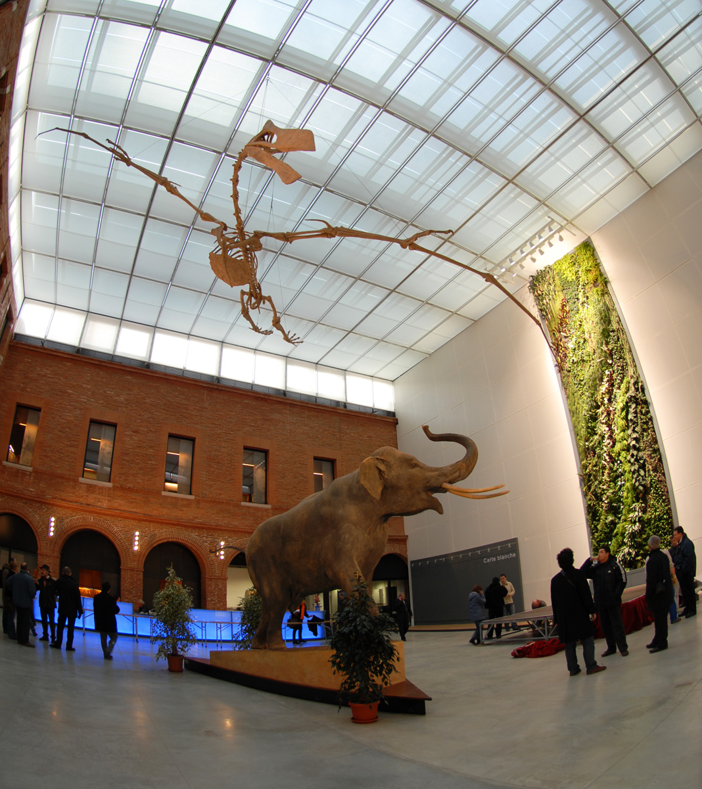
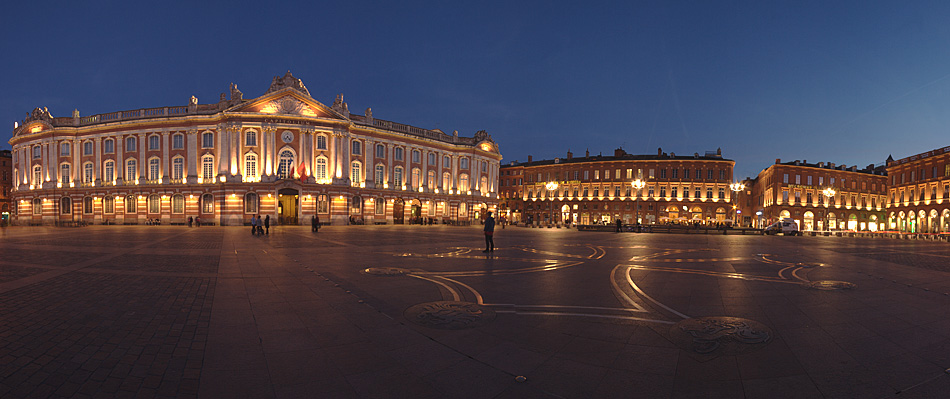
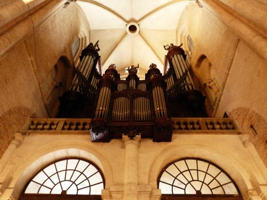
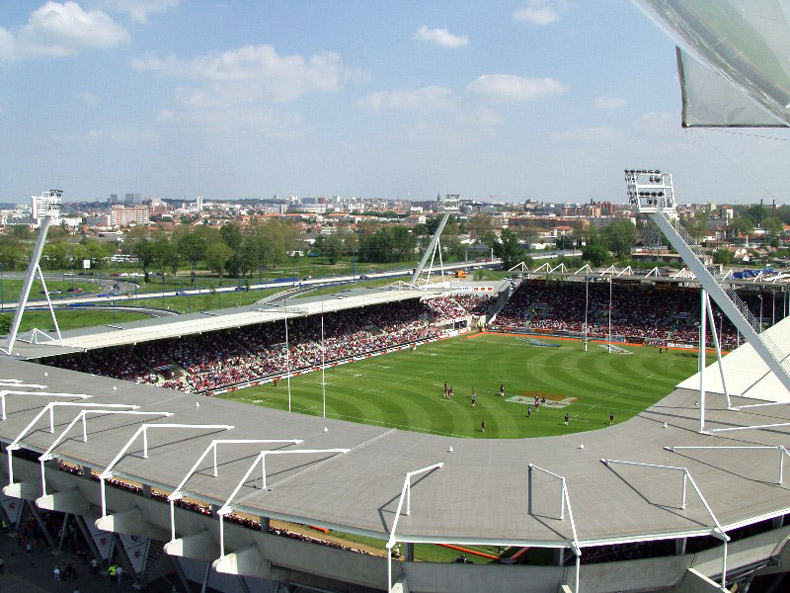
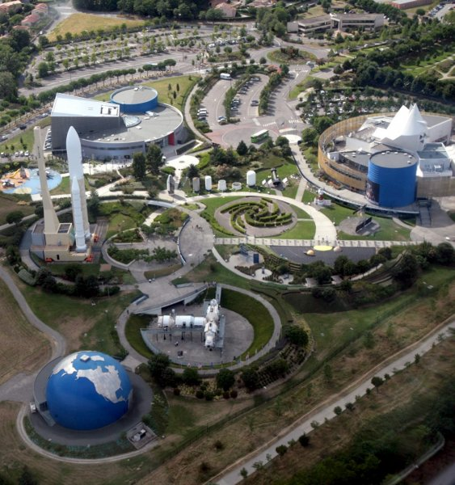

-

Le Museum de Toulouse
Tout savoir sur l’histoire de l’humanité ! Comprendre comment fonctionne notre planète ! Les animaux, les plantes vous intéressent ? Alors, rendez-vous au Muséum ! Dès vos premiers pas dans le hall du muséum d’histoire naturelle de Toulouse, vous êtes frappés par l’immense squelette du Quetzalcoatlus aux ailes largement déployées au-dessus de vos têtes. Ensuite le parcours muséographique vous présente, étape par étape, l’avancée de nos connaissances autour de 5 thématiques : la planète Terre, les êtres vivants, la notion de temps, l’Homme et le Futur. Complétez votre découverte du monde végétal par une promenade dans le jardin botanique Henri Gaussens et dans le jardin des plantes.
-

Place du Capitole à Toulouse
La place du Capitole est située en plein centre-ville de Toulouse face au Capitole du même nom. Elle mesure 12 000 m² et ne contient aucune construction si ce n'est qu'est présente au sol la croix occitane. Seul l'accès du parking souterrain situé en dessous est visible au coin sud-ouest. La place est entourée de trois rues donnant l'accès aux voitures. Depuis peu, la rue sud est limitée aux riverains et aux taxis par un accès règlementé. Le centre est exclusivement réservé aux piétons, à des manifestations ou aux marchés quotidiens. La place est accessible en métro via la station Capitole
-

Basilique Saint-Sernin de Toulouse
La basilique Saint-Sernin de Toulouse est un sanctuaire bâti pour abriter les reliques de saint Saturnin, premier évêque de Toulouse, martyrisé en 250. Devenu l'un des plus importants centres de pèlerinage de l'Occident médiéval, elle fut desservie, depuis le IXe siècle au plus tard et jusqu'à la Révolution française, par une communauté canoniale. Saint-Sernin est la plus grande église romane conservée en Europe. La rue du Taur qui mène de la place du Capitole à la basilique tire d'ailleurs son nom des circonstances du martyre. Saint Saturnin, alors à la tête de la communauté chrétienne de Toulouse, est pris à parti par les prêtres païens dans le forum au pied du Capitolium antique (actuelle place Esquirol). Selon la légende, il est sommé de se prosterner devant les statues païennes. Refusant de se prosterner, il est attaché par les pieds à un taureau de sacrifice, sans aucune forme de procès. Devant les cris de la foule, le taureau furieux prend la fuite le long du cardo, franchit la porte Nord puis la corde rompt et le corps inerte reste sur ce qui était alors une route sortant de la ville. Deux jeunes filles, les saintes Puelles, l'enterrent sur place. La basilique conserve 260 chapiteaux romans1 et est le symbole de l'architecture romane méridionale. Toulouse recevait alors la visite de nombreux pèlerins sur le chemin de Saint-Jacques-de-Compostelle, ou venus honorer les reliques de saint Saturnin.
-

Pont-Neuf de Toulouse
Le pont Vieux et le pont de la Daurade ne suffisant plus, au milieu du XVIe siècle, à assurer la liaison des deux rives de la Garonne, les Capitouls décidèrent en 1541-1542 de la construction d'un grand pont de pierre et de briques. François 1er autorisa à lever 20 000 livres pour financer l'ouvrage. La première pierre fut posée en 1544 et la construction de la sixième pile ne fut entamée qu'en 1579. Les difficultés financières, habituelles en période de troubles, s'ajoutèrent au écueils techniques liés aux sols instables. Les premières piles sont fondées sur des marnes et des molasses, alors que la pile orientale repose sur des alluvions, nécessitant la mise en oeuvre préalable de pilotis. Pour cette raison, le nombre de piles fut réduit de neuf à huit, la dernière arche étant plus ouverte. Le chantier fut repris sous Henri IV, qui confia aux architectes Capmartin et Souffron "L'oeuvre du pont". Des sondages ayant montré l'instabilité des terrains et la "corruption du sixième pilier", aucun entrepreneur ne présentant les garanties suffisantes, les architectes durent entreprendre eux-mêmes la construction.
-

Stade Ernest-Wallon
Le stade Ernest-Wallon (ex-parc des Sports puis stade des Sept-Deniers) est le stade où le Stade toulousain joue à domicile. Après de lourds travaux de rénovation au début des années 2000, il dispose désormais de 19 500 places. Il se situe dans le quartier des Sept-Deniers près de Blagnac au nord-ouest de Toulouse. Il porte le nom d'Ernest Wallon, président du Stade olympien des étudiants de Toulouse (SOET) et professeur de droit de la faculté de Toulouse, au début du XXe siècle, qui participa à la création du stade des Ponts Jumeaux de Toulouse.
-

Cité de l'espace
La Cité de l'espace est un parc à thème scientifique orienté vers l'espace et la conquête spatiale, dédié autant à l'astronomie qu'à l'astronautique. Située à Toulouse, la Cité de l'espace a été inaugurée en juin 1997. Elle a été réalisée à l’initiative de la Mairie de Toulouse avec la participation de nombreux partenaires comme le Conseil régional de Midi-Pyrénées, les Ministères de l’Équipement, des Transports, de la Défense, de l’Éducation Nationale, de la Recherche et de la Technologie,du Centre national d'études spatiales (CNES), de Météo-France, d'EADS, Astrium, entre autres.